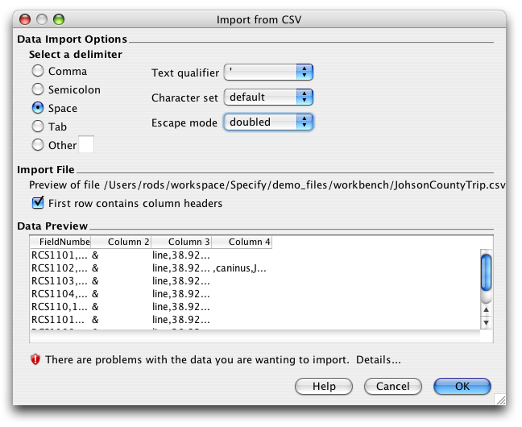
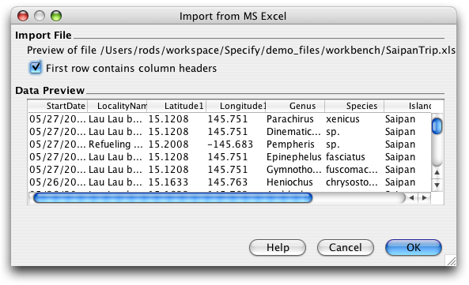
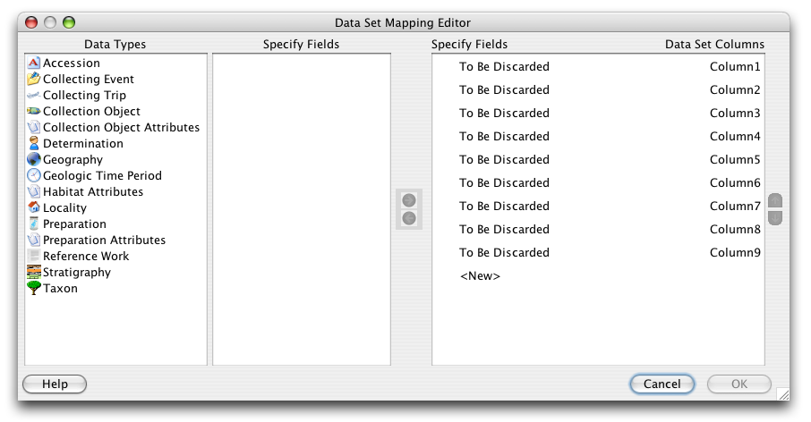

The WorkBench can easily import data from a CSV (comma separated value or comma delimited text) file into a new Data Set.
Notes:
Import from MS Excel
To begin, click on the Import Data action on the Sidebar and choose the import file in the file dialog.
The following information dialog will open:

Incorrect Import Options
This dialog enables the WorkBench to properly import the file by allowing the user to set data import options.
The Data Preview window reads and displays a sample of the column headings and data from the import file. If the file does not contain column headings the columns will be labelled in numerical order (Column 1, Column 2, etc.).
Incorrect import options will be visible in the Data Preview window and will also have a warning icon and message displayed.
To correct the information displayed, choose different selections in the 'Data Import Options' section of the dialog. When the 'Data Import Options' are correct the 'Data Preview' window will display the CSV file correctly and the warning icon will disappear. The corrected dialog is shown below:

Correct Import Options
The next step in the import process is to 'map' the column headings from the import file to Specify fields.
The Workbench includes an 'auto-mapping' feature which first identifies column headings and compares them to existing Data Sets. If the column headings in the import file match those in an existing Data Set the following dialog will open:

New Data Set Column Headings
To copy the 'map' from an existing Data Set select the 'Use an existing Data Set mapping' button and choose the Data Set from the list provided. The Data Set Properties dialog will then open, to name and describe the new Data Set.
To create a new map for the new Data Set select the 'Create new Data Set mapping' button and click 'OK'.
The 'auto-mapper' then compares the import column headings to the Specify fields and 'maps' the columns to matching fields.

Column Headings Automapped in the Data Set Mapping Editor
The column headings from the import file appear under 'Data Set Columns' on the right side of the dialog and are mapped to 'Specify Fields' on the left.
Column headings that map to Specify fields are identifed by a  (linked) icon.
(linked) icon.
Column headings that have not been automapped will have 'To Be Discarded' displayed under 'Specify fields'. Unmapped column headings will be deleted if they are not mapped to a Specify field before clicking 'OK'.
The buttons in the dialog enable columns to be mapped, unmapped, added, deleted and reordered .
| Map | Adds the field to the column list | |
| Unmap | Removes the field from the list of columns | |
| Reorder up | Moves the selected field up | |
| Reorder down | Moves the selected field down |
To map an unmapped Data Set column to a Specify field:
To unmap a column from a field:
To add a column
A  (link) icon confirms that the column and field are the same heading.
(link) icon confirms that the column and field are the same heading.
Note: A field may only map once. Specify fields that are mapped display a green check mark next to their name in the Specify field list confirming that they are in use.
When all the Columns are mapped and ordered correctly click the 'OK' button.
Complete the import process by naming and describing the new Data Set:

Data Set Properties
Import files that do not contain column headings can not be 'auto-mapped' to fields in Specify. Columns are labelled according to their numerical order and need to be manually mapped.

Map of Import File with No Column Headings
Columns without headings display 'To Be Discarded' rather than mapping to Specify fields. Unmapped column headings will be deleted if they are not mapped to a Specify field before clicking 'OK'.
The buttons in the dialog enable columns to be mapped, unmapped, added, deleted and reordered . The function of each button is described below:
| map | adds the field to the column list | |
| unmap | removes the field from the list of columns | |
| reorder up | moves the selected field up | |
| reorder down | moves the selected field down |
To map an unmapped Data Set column to a Specify field:
To unmap a column from a field:
To add a column
A  (link) icon confirms that the column and field are the same heading.
(link) icon confirms that the column and field are the same heading.
Note: A field may only map once. Specify fields that are mapped display a green check mark next to their name in the Specify field list confirming that they are in use.
When all the columns are mapped and ordered correctly click the 'OK' button.
Complete the import process by naming and describing the new Data Set:
Data Set Properties
To rename columns headings see Form Editing.
CSV files that are corrupt or have not been saved correctly will not import correctly into the WorkBench. A bad file may appear in the Data Set Mapping Editor with partial or no column headings, or display a warning at the bottom of the WorkBench window: